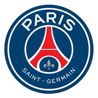
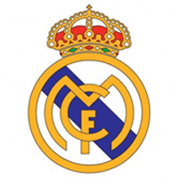
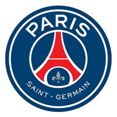
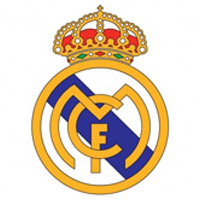

Over 700 teams and clubs are available worldwide
 



Fantasy Football
Football Stories
One of the greatest football stories of all time revolves around the legendary Brazilian striker Ronaldo. In the 2002 FIFA World Cup, Ronaldo faced tremendous pressure after suffering a career-threatening knee injury just a few years prior. However, he defied all odds and led Brazil to victory in the tournament, scoring crucial goals and showcasing his unparalleled skill and determination. This triumph not only solidified Ronaldo's place among the footballing greats but also serves as an inspiration to never give up on your dreams, no matter the challenges you face.